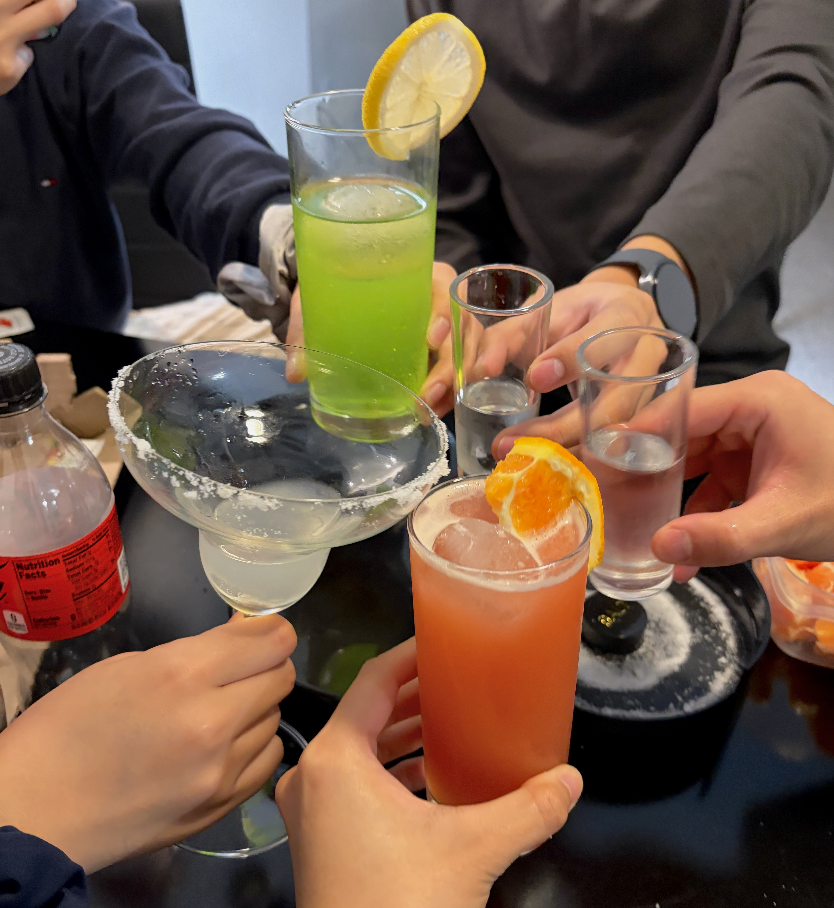
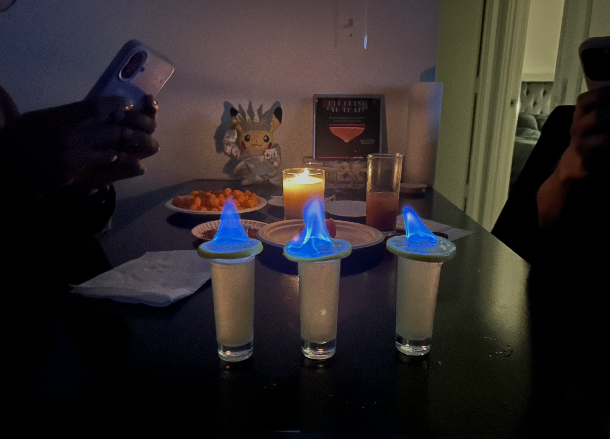

🏠 Welcome
Hi! Welcome to B2A2.
📍 Location: 3570 Green Brier Blvd Apt 410C




📅 Schedule
Pick a date you'd like to visit the bar and submit a request — I'll get notified and get back to you.
- Groups of 2 are preferred, up to 3 guests max
- Max 2 bookings per week
- Visits start after 6 PM
MonTueWedThuFriSatSun
Open
Busy
Booked